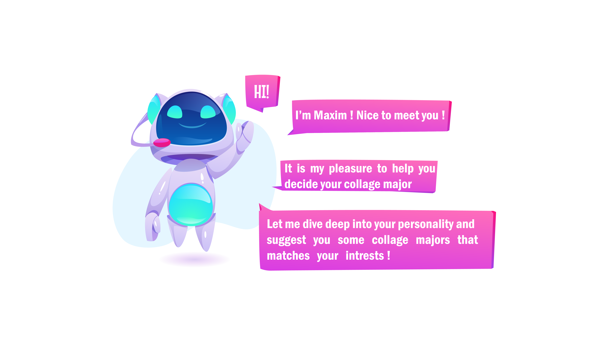

    {% extends "base.html" %}

<head>
    <link rel="icon" href="../static/images/favicon.png">
    <meta name="viewport" content="with=device-width, initial-scale=1.0">
    {% block title %}Maxim{% endblock %}
    <link rel="preconnect" href="https://fonts.googleapis.com">
    <link rel="preconnect" href="https://fonts.gstatic.com" crossorigin>
    <link href="https://fonts.googleapis.com/css2?family=Ubuntu:ital,wght@0,300;0,400;0,700;1,500&display=swap" rel="stylesheet">
    <link rel="stylesheet" href="https://cdnjs.cloudflare.com/ajax/libs/font-awesome/4.7.0/css/font-awesome.min.css">


</head>

{% block content %}

<style>
    /* Maxim LetsGO Page*/

 .start{
     display:contents;
     position: relative;
     margin-top: -590px;
     margin-left: 550px;
 }


.MaximImage{
    width: 80%;
    position:relative;
    left:0%;
    bottom:100px;
    z-index:-5; /*to send it to the background*/

}


.btn {
    width: 150px;
    display: inline-block;
    height: 40px;/* Bubble size */
    padding: 5px 12px 2px 20px;
    font-weight: 1000;
    font-family: arial;
    position: fixed;
    margin: 10px ;
    left:60%;
    top:80%;
    text-decoration: none;
    font-size: 20px;
    text-align: left;
    display: inline-block;
    color:rgb(189, 99, 207);
    border: 2px solid #c056c4;
    font-size: 20px;
    background: white;
    cursor: pointer;
}

.btn:before {
    content: "";
    width: 0px;
    height: 0px;
    position: absolute;
    border-left: 10px solid transparent;
    border-right: 10px solid rgb(189, 99, 207);
    border-top: 10px solid rgb(189, 99, 207) ;
    border-bottom: 10px solid transparent;
    right: 1px;
    bottom: -20px;
  }
  
  
  .btn:hover::before{
    border-left: 10px solid transparent;
    border-right: 10px solid #a990ff;
    border-top: 10px solid #a990ff ;
    border-bottom: 10px solid transparent;
    right: 1px;
    bottom: -18px;
    transition: 0.5s ;
}

  .btn:hover {
    border-radius: 5px;
    border: 0px ;
    text-decoration: none;
    color: #ffff;
    background: linear-gradient(to right, #ff69df,#a990ff);
    transition: 0.5s ;
}


</style>

    <!-- JavaScript for toggle Menu -->
    <script>
        var navLinks = document.getElementById("navLinks");
        function showMenu(){
             navLinks.style.right = "0";
        }
        function hideMenu(){
             navLinks.style.right = "-201px";    
        }

    </script>

  <section>
      <div class="start">
      
      <a class="btn" href="../Maxim/MaximPage"> Lets GO ! </a>
      </div>
  </section>

  {% endblock %}


